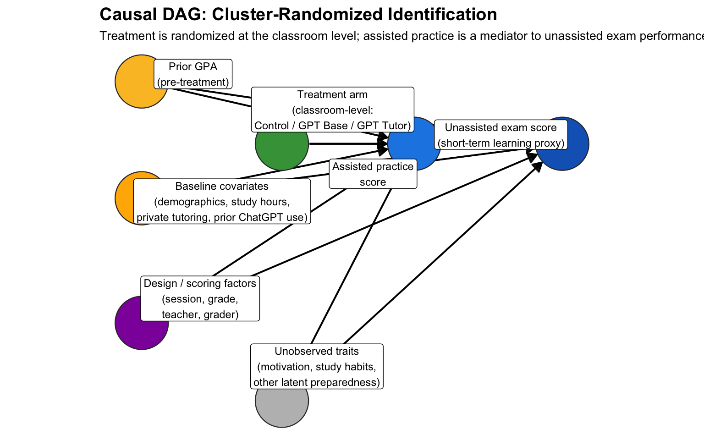
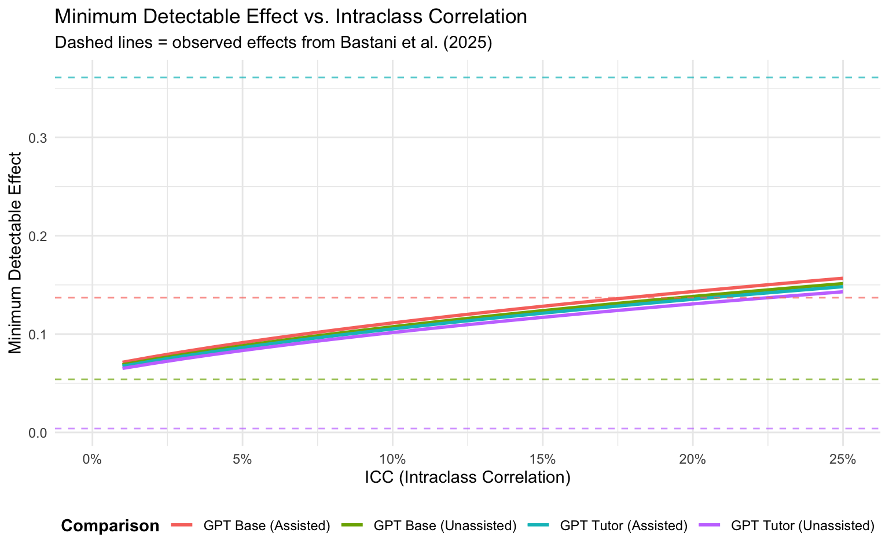
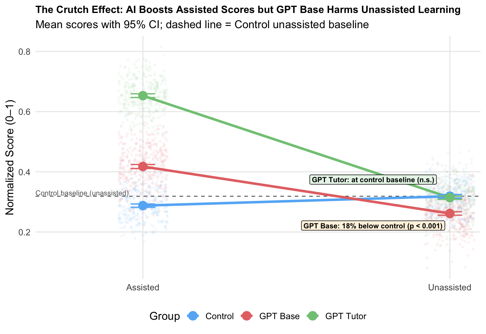
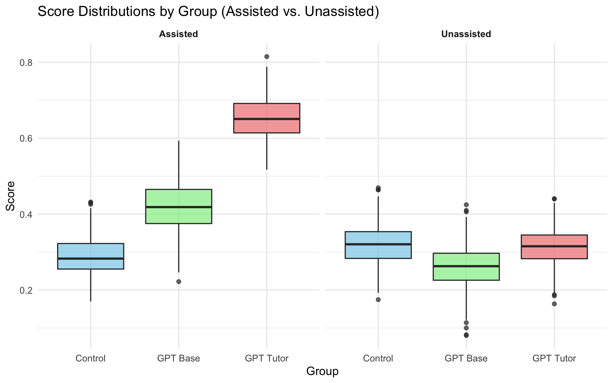
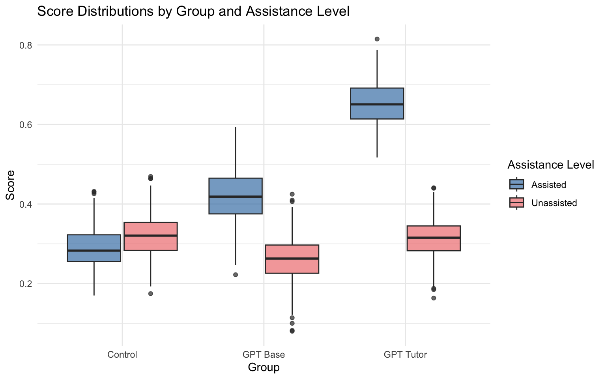
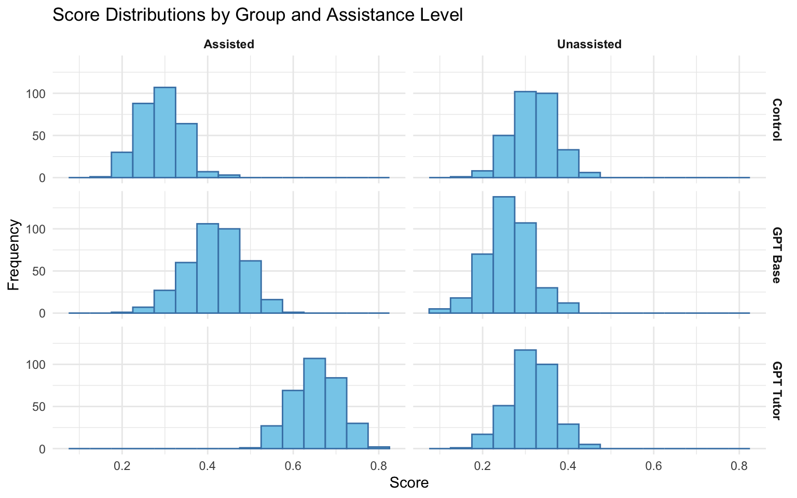
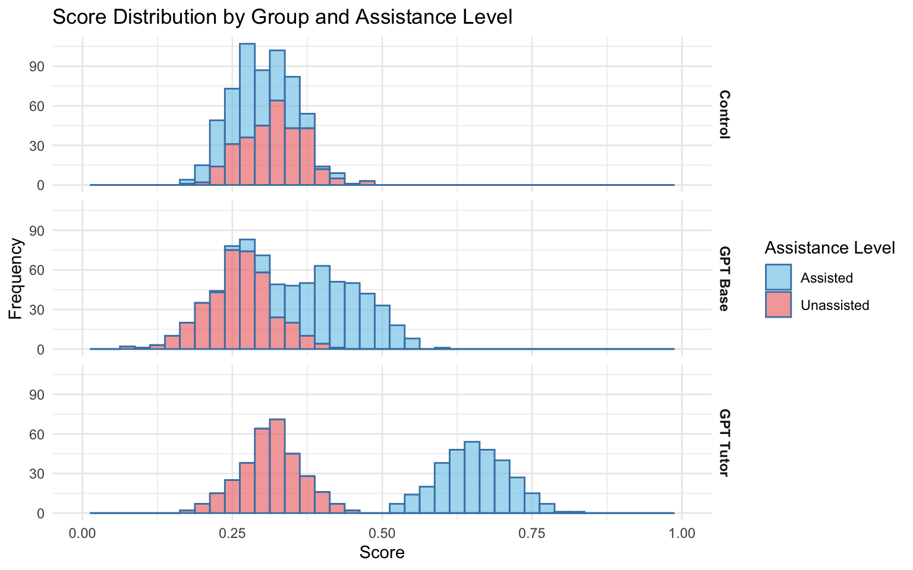
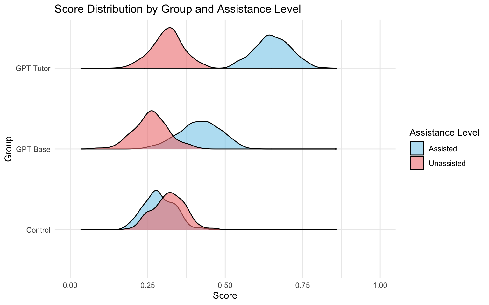

Code
plot_causal_dag()
Updated in March, 2026 to incorporate author-shared data
In this report, we simulate a randomized control trial (RCT) conducted by the Wharton School in 2024, titled: “Generative AI Can Harm Learning”. Our replicated experiment confirmed that having access to Chat GPT-4 improves student performance on math tests, but actually reduces performance when access to Chat GPT is taken away, suggesting it hinders the long-term learning of new concepts. Conversely, using a customized Chat GPT-4 “Tutor” model boosted performance on assisted tasks without significantly affecting unassisted ones, indicating that purpose-built AI models may be a valuable tool for supporting long-term learning.
Bastani, Hamsa and Bastani, Osbert and Sungu, Alp and Ge, Haosen and Kabakcı, Özge and Mariman, Rei, Generative AI Can Harm Learning (July 15, 2024). The Wharton School Research Paper, Available at SSRN: https://ssrn.com/abstract=4895486 or http://dx.doi.org/10.2139/ssrn.4895486
As AI-based chatbots have become more widely used, students have naturally started relying on them for homework, studying, and essay writing. However, these chatbots have not been around very long, so the effects on student learning is not well understood. Many discussions around the use of AI focus on increasing worker productivity and how to keep students from cheating with AI, rather than analyzing the impact that AI use has on students’ long-term learning of new concepts. While AI tools like GPT-4 have shown significant potential to enhance productivity and provide knowledge, they also pose risks, such as inhibiting learning through overreliance or reducing the development of foundational skills. Understanding this tradeoff is essential for ensuring that AI technologies are used responsibly and effectively, particularly in contexts like education where long-term skill development is crucial. There has been an increase in students using AI, and current lesson plans were not designed with that in mind. It would be difficult, at this point, to fully eliminate the use of AI by students. For that reason, it is important to understand the effect that it has on learning.
This research paper examines the problem of understanding the impact of AI integration in education by quantifying its effects on student performance. One challenge to this type of experiment is finding a way to implement a randomized controlled trial in the real world; this paper addresses that challenge by finding a highschool that randomly assigns its students to classrooms, creating a natural RCT experiment design. The experiment utilizes two custom-designed chatbots: “GPT Base,” modeled after GPT-4, and “GPT Tutor,” optimized for active learning. We evaluate student performance with and without access to these chatbots. The original study’s hypothesis posited that GPT Base may negatively affect students in two ways: by introducing errors that mislead students in subsequent unassisted problems, or by serving as a “crutch” that hinders full engagement with the material. In contrast, GPT Tutor was designed to mitigate these issues, as its prompt includes the solution, reducing the likelihood of errors, and it guides students step-by-step rather than providing direct answers. This approach aims to promote active learning and prevent over-reliance on AI assistance.
By reproducing this experiment with simulated data, we can demonstrate our ability to design and execute a randomized controlled trial, analyze the resulting data, and draw conclusions that inform the responsible integration of AI in education. The main challenges in replicating this experiment are accurately simulating students’ scores to reflect the impact of the GPT based chatbots and accurately capturing the differences between the GPT Base and GPT Tutor models.
Despite those potential challenges, this exercise allows us to apply our understanding of experimental methods to a real-world problem, while generating insights that can contribute to the ongoing discussion surrounding the impact of AI technologies on student learning and skill development.
The research design was a randomized controlled trial involving nearly 1,000 students from 50 classrooms in grades 9 through 11 at a large high school in Turkey. Randomization was performed at the classroom level because students were already randomly assigned to these groups, and honors classrooms were excluded because they are not randomly assigned.
The study spanned four 90-minute sessions, each with a sequence of 3 activities. First, teachers reviewed the topic with students. Second, students participated in a randomized, assisted AI session, where they either used GPT Base, GPT Tutor, or relied on textbooks and notes (control group). This session was scored to assess performance. Finally, students completed an unassisted evaluation, also scored, to measure how well they had learned the new information.
Data was collected in three main ways. At the start of the study, students completed a survey capturing their demographics and educational background. During the sessions, student performance was recorded for both the assisted practice and the unassisted evaluations. Additionally, students who interacted with AI chatbots had their chat data logged, and surveys captured their experiences using the tools.
To evaluate the impact of the interventions, the authors used a regression model to analyze student outcomes. The dependent variable, Outcome(j) , represented the normalized grade of a student in either the assisted (j = 0) or unassisted (j = 1) sessions, scaled from 0 to 1. The researchers examined heterogeneous treatment effects, investigating how the treatment effects vary across different subgroups of the study population. Specifically, they analyzed whether the effects of AI assistance differed based on students’ prior academic performance, access to private tutoring, and hours spent studying. While this analysis can provide valuable insights into how different types of students may respond to AI tutoring tools, our replication using simulated data does not include this component. Our focus remains on reproducing the main effects observed in the original experiment.
The independent variables GPTBasec and GPTTutorc indicate the treatment group for each class. The model controlled for prior student performance using normalized GPA from the previous year, PrevGPAi, and included fixed effects for session, grade, year, and time-related variations (Ts, Dg, Ay, Gt). In our replication, we removed the fixed effects and GPA from the regression model.
This experiment was pre-registered on https://aspredicted.org/4DL_Q3J. Pre-registering experiments enhances the transparency and credibility of scientific research. By declaring hypotheses, methods, and analyses in advance, pre-registration helps reduce publication bias and prevents p-hacking, improving the scientific rigor of experiments.
Handling non-compliance was another interesting aspect of this experiment. In five instances, a treatment classroom could not execute the treatment due to unanticipated external circumstances. In the paper, researchers checked the validity of the results accounting for non-compliance by performing an alternative regression specification where non-compliers are excluded. The results for the alternative regression were nearly identical to the main analysis, confirming that non-compliance did not significantly alter the outcome of the experiment. Due to the negligible effect on overall results, we did not include this alternative regression in our analysis.
The figure below presents the causal directed acyclic graph (DAG) for the study. The key identification assumption is that random assignment of classrooms to treatment arms blocks all confounding paths between treatment (Z) and the outcome scores. Because students were already randomly assigned to classrooms by the school, and treatment was randomized at the classroom level, there is no path from unobserved confounders (U) to treatment assignment.
plot_causal_dag()
The DAG also highlights an important structural feature: treatment can affect unassisted scores through two channels. First, a direct effect where the type of AI tool used during practice changes how students encode new material. Second, a mediated effect through assisted scores, where higher assisted performance (enabled by AI) may create false confidence or reduce effortful processing, which then carries over to the unassisted evaluation. This mediation pathway is the mechanism behind the “crutch effect” described by the original authors.
Threats to identification. Random assignment addresses selection bias, but several other threats remain:
Our simulation captures the treatment effects and clustering structure but cannot replicate these threats, which would require real behavioral data.
To construct our dataset, we reverse-engineered the score and classroom data. We modeled 50 classrooms with 20 students each, creating one row per student. Normalized previous GPA values were generated using a normal distribution with a mean of 0.82 and a standard deviation of 0.11, bounded between 0 and 1.
Classrooms were randomly assigned to GPT Base, GPT Tutor, or control groups. Assignment probabilities were based on the proportion of students in each group as reported in the original study.
Fixed effects were assigned randomly as integers, including session numbers (1–4), grade levels (9–12), teachers (1–20), and graders (1–10). Fixed effects were excluded from score generation, as their variance was already accounted for in the original study’s regression model. This approach allowed us to focus solely on replicating the treatment effects described in the paper.
Finally, student scores were simulated. Since standard errors were calculated at the classroom level, we generated coefficients for each classroom by using the coefficients and standard errors provided in the paper. Coefficients were drawn from a normal distribution using the reported means and standard deviations, then applied to the paper’s linear regression model with a small amount of noise to calculate scores for each student.
A critical question for any RCT is whether the study is adequately powered to detect the effects of interest. Because treatment was assigned at the classroom level, we must account for the intraclass correlation (ICC), which captures how much of the outcome variance is between classrooms versus within classrooms.
The minimum detectable effect (MDE) for a cluster-randomized trial comparing treatment arm \(j\) to control is:
\[\text{MDE} = \left(t_{\alpha/2,\,df} + t_{\beta,\,df}\right) \times \sigma \times \sqrt{1 + (m-1)\rho} \times \sqrt{\frac{1}{n_j} + \frac{1}{n_c}}\]
where \(\sigma\) is the outcome standard deviation, \(\rho\) is the ICC, \(m\) is students per classroom, \(n_j\) and \(n_c\) are total students in each arm, and \(df = J_j + J_c - 2\) uses the number of clusters rather than individual students.
The original paper does not report the ICC. We therefore compute the MDE across a range of plausible ICC values (1%–25%) and compare each to the observed treatment effects. The plot below shows when each effect crosses the detectability threshold. Dashed lines represent the observed effect sizes from Bastani et al. (2024). An effect is adequately powered when its dashed line sits above the corresponding MDE curve.
simulated_data <- generate_simulated_data(seed = SEED)
pa <- run_power_analysis(simulated_df = simulated_data)
plot_power_curves(pa)
format_power_table(pa)| Comparison | ICC | MDE | Observed | Powered |
|---|---|---|---|---|
| GPT Base (Assisted) | 0.05 | 0.091 | 0.137 | Yes |
| GPT Base (Assisted) | 0.20 | 0.143 | 0.137 | No |
| GPT Base (Unassisted) | 0.05 | 0.088 | 0.054 | No |
| GPT Base (Unassisted) | 0.20 | 0.138 | 0.054 | No |
| GPT Tutor (Assisted) | 0.05 | 0.086 | 0.361 | Yes |
| GPT Tutor (Assisted) | 0.20 | 0.135 | 0.361 | Yes |
| GPT Tutor (Unassisted) | 0.05 | 0.083 | 0.004 | No |
| GPT Tutor (Unassisted) | 0.20 | 0.131 | 0.004 | No |
Interpretation. GPT Tutor’s assisted effect (+0.361) is detectable even with high ICC values. GPT Base’s assisted effect (+0.137) is detectable for ICC values up to roughly 15%. GPT Base’s unassisted effect (-0.054) falls near the detection boundary, meaning the study may be marginally powered to detect this harm. GPT Tutor’s unassisted effect (-0.004) is far below the MDE at any plausible ICC. The non-significant result for GPT Tutor on unassisted scores could therefore reflect insufficient power rather than a true null, though the effect is small enough to be practically negligible.
Student scores are simulated. Since standard errors were calculated at the classroom level, we generated coefficients for each classroom by using the coefficients and standard errors provided in the paper. Coefficients were drawn from a normal distribution using the reported means and standard deviations, then applied to the paper’s linear regression model with a small amount of noise to calculate scores for each student.
write.csv(simulated_data, here("data", "simulated_data.csv"), row.names = FALSE)Results show that use of the chatbots increased performance on the assisted assessment, with GPT Base improving scores by .137 (out of 1) and GPT Tutor improving scores by .361 (out of 1) relative to the control group. On the unassisted assessment, GPT Base decreased performance by .054 (out of one) relative to the control group (17% decrease). GPT Tutor’s impact on the unassisted portion was statistically significant at -.004. Our replication yielded results that closely aligned with the original study, with Assisted assessments: GPT Base: Coefficient = 0.135 (SE = 0.021) and GPT Tutor: Coefficient = 0.358 (SE = 0.023). And unassisted assessment of GPT Base: Coefficient = -0.052 (SE = 0.019), and GPT Tutor: Coefficient = -0.005 (SE = 0.020).
These results are very close to the original study’s findings, where GPT Base improved assisted scores by 0.137 and decreased unassisted scores by 0.054, and GPT Tutor improved assisted scores by 0.361 and had a minimal effect (-0.004) on unassisted scores.
The p-values of our two-sample t-tests generally align with the original study’s findings, where GPT Base improved assisted scores and decreased unassisted scores with statistical significance (p<0.001), and GPT Tutor did not have a statistically significant impact on unassisted scores (p=0.0589). All differences between assisted and unassisted scores were statistically significant (p<0.001).
Our replication successfully reproduced the key findings: GPT Base significantly improved performance on assisted tasks but hindered performance on unassisted tasks, while GPT Tutor substantially improved assisted performance without significantly impacting unassisted performance.
The chart below distills the study’s central finding. Each line connects a group’s mean assisted score to its mean unassisted score. The steep drop for GPT Base is the “crutch effect”: students performed well with AI help but lost that advantage once it was removed. GPT Tutor, by contrast, maintained performance across both conditions.
long_data <- prepare_long_data(simulated_data)
plot_crutch_effect(long_data)
plot_boxplots_faceted(long_data)
plot_boxplots_dodged(long_data)
plot_histograms_grid(long_data)
plot_histograms_overlaid(long_data)
plot_ridge(long_data)
regs <- run_regressions(simulated_data)
format_regression_table(regs$assisted, "Regression Results: Assisted Scores")| Predictor | Estimate | Std. Error | t value | p-value | CI Lower | CI Upper |
|---|---|---|---|---|---|---|
| (Intercept) | 0.291 | 0.016 | 18.360 | < 0.001 | 0.259 | 0.322 |
| GPT_base | 0.131 | 0.005 | 28.928 | < 0.001 | 0.122 | 0.140 |
| GPT_tutor | 0.367 | 0.005 | 77.724 | < 0.001 | 0.358 | 0.376 |
| prev_gpa | -0.008 | 0.019 | -0.406 | 0.685 | -0.045 | 0.030 |
format_regression_table(regs$unassisted, "Regression Results: Unassisted Scores")| Predictor | Estimate | Std. Error | t value | p-value | CI Lower | CI Upper |
|---|---|---|---|---|---|---|
| (Intercept) | 0.341 | 0.014 | 24.147 | < 0.001 | 0.313 | 0.369 |
| GPT_base | -0.054 | 0.004 | -13.267 | < 0.001 | -0.062 | -0.046 |
| GPT_tutor | -0.007 | 0.004 | -1.570 | 0.117 | -0.015 | 0.002 |
| prev_gpa | -0.026 | 0.017 | -1.503 | 0.133 | -0.059 | 0.008 |
tests <- run_all_ttests(simulated_data)
format_ttest_table(tests)| Test | t-statistic | df | p-value | Mean Difference |
|---|---|---|---|---|
| Control vs. GPT Base (Assisted) | -29.732 | 673.68 | < 0.001 | -0.131 |
| Control vs. GPT Tutor (Assisted) | -86.253 | 611.56 | < 0.001 | -0.367 |
| Control vs. GPT Base (Unassisted) | 13.366 | 677.56 | < 0.001 | 0.054 |
| Control vs. GPT Tutor (Unassisted) | 1.635 | 617.68 | 0.103 | 0.006 |
| Control: Unassisted vs. Assisted | 9.246 | 597.16 | < 0.001 | 0.036 |
| GPT Base: Unassisted vs. Assisted | -32.941 | 742.66 | < 0.001 | -0.149 |
| GPT Tutor: Unassisted vs. Assisted | -78.711 | 629.29 | < 0.001 | -0.338 |
Reproducing an RCT with simulated data is a useful exercise for validating statistical methods and building intuition about experimental design. However, it is important to be explicit about what this approach can and cannot establish.
What the simulation captures:
What the simulation cannot capture:
What this means for interpretation. Our results confirm that the original paper’s statistical methods recover the reported effects given the reported parameters. This is a consistency check, not an independent validation. The substantive conclusions about AI’s impact on learning rest on the original data, not on our simulation. A true replication would require running the experiment again with real students, ideally in a different setting to test external validity.
Being explicit about these boundaries is itself a methodological contribution. It clarifies the distinction between statistical reproducibility (can we recover the numbers?) and scientific replicability (does the finding hold in new contexts?), a distinction that is central to the credibility of empirical research on AI in education.
This replication reveals several open questions that merit further investigation. Three directions seem especially promising.
1. A measurement framework for durable learning. The Bastani et al. study operationalizes learning as performance on an unassisted evaluation administered shortly after the assisted session. This captures one dimension of knowledge acquisition, but “durable learning” likely involves retention over weeks or months, transfer to novel problem types, and the ability to explain reasoning, not just produce correct answers. Developing validated instruments that separate AI-assisted performance from genuine understanding remains a largely unresolved measurement problem. Without it, studies risk conflating short-term recall with lasting skill development.
2. Quasi-experimental identification in naturalistic settings. The original study benefited from a rare design advantage: a school that randomly assigns students to classrooms. Most institutions do not randomize, which means future research will need credible quasi-experimental strategies. Variation in institutional AI policies (e.g., universities that ban, permit, or mandate AI tools at different times) creates natural experiments amenable to difference-in-differences or regression discontinuity designs. These approaches can extend the evidence base beyond controlled settings to the messy reality of higher education, where AI adoption is already widespread and uneven.
3. Heterogeneous treatment effects. The original paper reports average treatment effects, but the impact of AI on learning likely varies across students. Prior academic performance, study habits, and familiarity with AI tools could all moderate the treatment effect. Our power analysis suggests that detecting small heterogeneous effects would require substantially larger samples or more efficient designs. Moving beyond average effects to identify which students benefit and which are harmed would produce evidence that is actionable at the individual level, informing personalized AI policies rather than one-size-fits-all mandates.
Each of these directions connects to a limitation of the current work: the measurement gap (limitation: measurement validity), the setting constraint (limitation: ecological validity), and the averaging problem (limitation: simulating only mean effects). Addressing them would advance both the methodological toolkit and the substantive understanding of how generative AI reshapes learning.
Our replication study corroborates the original paper’s findings about the differential impacts of AI chatbots on student learning. Both AI models improved immediate performance on assisted tasks, but the long-term impacts differed depending on which chatbot was used. This highlights the importance of distinguishing between short-term assistance and actual learning.
The stark contrast between GPT Base and GPT Tutor’s effects on unassisted performance underscores the critical role of AI design in educational contexts. GPT Tutor’s ability to improve assisted performance without significantly impacting unassisted performance suggests that carefully designed AI tools can be valuable educational assets. The negative impact of GPT Base on unassisted performance serves as a warning against uncritical adoption of general-purpose AI in educational settings.
More broadly, this exercise demonstrates that the statistical findings are internally consistent: the reported coefficients, standard errors, and sample sizes produce the expected results when fed through the original regression specification. What remains to be established through future empirical work is whether these effects replicate in new populations, persist over longer time horizons, and vary across the students who need the most support.
Bastani, Hamsa and Bastani, Osbert and Sungu, Alp and Ge, Haosen and Kabakcı, Özge and Mariman, Rei, Generative AI Can Harm Learning (July 15, 2024). The Wharton School Research Paper, Available at SSRN: https://ssrn.com/abstract=4895486 or http://dx.doi.org/10.2139/ssrn.4895486